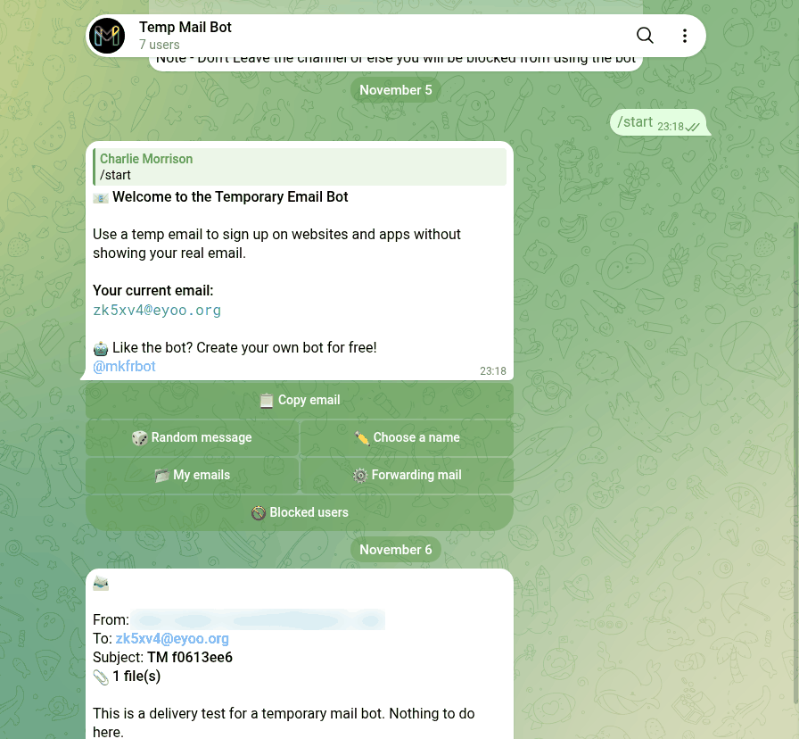

Temp Mail Telegram Bots: 65 Messaged, 8 Delivered Fast
Telegram search returns dozens of bots for "temp mail", and nearly all of them promise the same thing: a throwaway address, with the mail dropped straight into the chat. In November 2026 I messaged 65 of them and gave every one that produced an address a real email to catch.
Fourteen got me to an address within one tap. Eight pushed my email into the chat within 11 seconds. The biggest of them, with 90,000 monthly users, only showed it after I tapped Refresh, two hand out aliases of a stranger's Gmail, and nine of the thirteen addresses still took mail a day later.
How I tested
- Corpus. 15 searches in Telegram's own search box, the way a new user would look: eleven in English (
temp mail,temp email,temporary email,temporary mail,disposable email,temp mail bot,10 minute mail,email generator,mail bot,fake email,anonymous email) and four in Russian and Ukrainian, because many of these bots speak those first. They returned 71 bots. Two of the English searches,disposable emailandfake email, returned nothing. - Out before the first message. Seven, by their own description: two that send email for you rather than receive it, two that say they are switched off, and three that only have "mail" in the name (a make-up shop, a clicker game, an email-summary tool). I added one bot that a GitHub project names as its live instance. 65 in total.
- One tap, no more.
/start, then at most one press of the bot's own "new address" button (after picking English, if it asked for a language first). No channel joined, no phone number, nothing paid. - The delivery test. One email from my own Gmail to every address a bot gave me: subject
TMplus an 8-character ID unique to each bot, one sentence, one link and a one-line.txtattachment. A pass meant the bot showed me the subject or the text in the chat within ten minutes, counted from theDateheader Gmail stamped on the message. - Will a site accept it. Every domain the bots handed out, checked against disposable-email-domains, the most-used open blocklist of throwaway domains, read on the test night.
- The next day. A second email to the same address a day later (subject
TM2), every message a bot sent me unprompted in the meantime, then/stop.
What /start gets you
I sent /start to all 65 on 5 November 2026, waited ten seconds for each, and re-read every silent chat a quarter of an hour later.
- 33 never answered in the chat, not even late. Only one of them, @mail4_bot, shows any monthly users (305), and two have a web app behind the menu button instead: @eMailOnline_bot's simply opens tempmail.net. The rest are the long tail search keeps serving, many with no description at all.
- 3 are gone, including the instance the GitHub project points to.
- 4 put up a channel wall first. @TempMails_Bot (3,568 monthly users) wants five channel joins and a Verify tap before anything opens. Two Arabic-language bots show the same text and the same channel, so one operator runs both.
- 3 are closed to strangers: "access denied", "no permission", "you need a personal link from the admin".
- 4 aren't mail bots, whatever the name says: a help-desk bot, a feedback relay, one that only understands
/set username, and @Temp1_Mail_bot, whose/startsubscribed me to an Israeli news broadcast. - 1 keeps the mail in a web app. @MailAnonymousBot only says "click the blue button", which opens a Mini App. I didn't open it: the test is mail delivered to the chat, and a Mini App is handed your Telegram ID, first name and username the moment it opens (that's the
userfield in Telegram's Mini App launch data). - 17 lead somewhere. Five hand you an address in the first reply. Nine put it one tap away. Three ask for a language first.
So of the 65 bots Telegram search returns for temp mail, 14 get you to an address within one tap, about one in five. The biggest, @TempMail_org_bot (90,522 monthly users, from the temp-mail.org team by its own description), is one of the five that give you an address straight away.
Two details worth knowing before you pick one. @MailBurnBot and its English twin @MailBurnRobot say a new address has ten minutes to receive its first email, after which it is yours "for good", so create it only when the sign-up form is already open. And @hideemailbot says its mailboxes "work FOREVER" and can be shared with a group chat.
Did the email arrive?
Seventeen bots looked like they would hand over an address in one tap, so on 6 November I took each of them up on it. Fourteen did. The three that didn't: @hideemailbot answers "Create email" with three channels to join or a $5 donation to skip them, @tempmail_meta_bot puts up the same kind of channel wall right after you pick a language, and @tempmailbotik_bot replied "error creating mailbox" (I don't tap twice).
"One tap" was generous for a few. @MailBurnBot, @MailBurnRobot and @teletemprobot answer the tap with a list of domains, and @neatbox_bot asks whether you want a random address or one with your own word in it. I took the first option every time.
Two of the fourteen addresses aren't temporary mailboxes at all. @teletemprobot and @temporaryx_emailbot give you something shaped like name+random@gmail.com, a plus-alias of one stranger's real Gmail account. Gmail delivers anything sent to a plus-address into the owner's normal inbox, so your sign-up code lands in that person's mail and the bot reads it from there.
Then the same email went to all fourteen. 8 of 14 passed, and they were fast: each of the eight had the mail in the chat within 11 seconds. Four of them also told me there was an attachment.

| Bot | Domain | In the chat after | What it showed |
|---|---|---|---|
| @Mail_temporary_bot | eyoo.org | 2 s | subject, text, "1 file(s)" |
| @neatbox_bot | getneatbox.com | 2 s | subject, text |
| @telemailX_bot | qatools.app | 3 s | subject, names the attachment |
| @GmailLastBot | eyoo.org | 3 s | subject, text, "1 file(s)" |
| @tempemailpadibadibot | rosstrah.work | 3 s | subject, text, names the attachment |
| @tmailorcom_bot | kontoko.org | 4 s | sender and a masked subject; the text only inside its web app |
| @MailBurnBot | mburn.in | 10 s | subject |
| @MailBurnRobot | mburn.in | 11 s | subject |
The other six:
- @Temporarymil_bot did push the mail, after 15 minutes and 22 seconds. Outside my window, but it got there.
- @TempMail_org_bot, by far the biggest, never pushed anything. It isn't broken: tap Refresh and the mail is in the list. I tapped it 46 minutes after sending and the subject was there. It just won't tell you.
- @teletemprobot didn't push either; "Check Inbox" 28 minutes later showed the whole message.
- @emailtemporaltest_bot, a front end for Guerrilla Mail, had the mail in its inbox 12 seconds after I sent it, with the subject line blank.
- @temporaryx_emailbot has no inbox in the chat at all. Its address is a Gmail alias, so the mail went to somebody's Gmail and the bot never showed it to me.
- @AnoniMailerBot promises that "after receiving letters, the bot will notify you". Forty minutes on, its inbox said "No incoming yet", and an hour after creation it told me the address had expired. That one simply didn't work.
So for a sign-up code: eight bots drop it into the chat within seconds, two more show it if you go and look, and the biggest name needs a tap on Refresh.
Will a sign-up form accept the address?
Plenty of sign-up forms check your domain against a list of known throwaway services. The most-used open one, disposable-email-domains on GitHub, held 10,143 domains when I read it on 6 November (last updated 4 November). I checked every domain the bots gave me.
4 of the 14 are on it: en2ch.com (@TempMail_org_bot), kontoko.org (@tmailorcom_bot), guerrillamailblock.com (the Guerrilla Mail bot) and fldubai.com (@Temporarymil_bot). A site that uses this list will turn those addresses away at the form.
The other ten aren't listed: qatools.app, eyoo.org, mburn.in, getneatbox.com, rosstrah.work, smallmailo.my, and the two Gmail aliases (gmail.com is a real provider, so no blocklist will ever carry it). Not being listed today doesn't mean a site will accept the address. Sites use other lists and their own rules; it only means this one check won't stop you.
Fourteen addresses is a small sample, but the well-known names did worst in it: the bot with 90,000 monthly users and the Guerrilla Mail front are both on the list, while most of the small bots' domains aren't, or not yet.
Does it still work the next day?
On 7 November, about 24 hours after the first email, I sent a second one (subject TM2) to thirteen of the fourteen addresses. The fourteenth, @AnoniMailerBot's, was already gone by design: an hour after creating it, the bot told me that "temporary addresses are stored for 3600 seconds only".
9 of 13 still received mail.
- Pushed again within seconds: @telemailX_bot, @Mail_temporary_bot and @GmailLastBot (1 s), @tempemailpadibadibot, @neatbox_bot and @tmailorcom_bot (2 s, the subject masked again), and @MailBurnRobot (11 s).
- @Temporarymil_bot pushed it in under four minutes this time (237 seconds), against fifteen minutes the day before.
- @TempMail_org_bot stayed silent again, but the mail was in the list when I tapped Refresh 18 minutes later, at the same address it gave me on
/start. - @tempemailpadibadibot deserves a note: an hour before the second email it warned me the mailbox would "expire soon" and asked whether I wanted another 24 hours. I didn't answer, and the mail came through anyway.
Four didn't:
- @MailBurnBot, which passed in 10 seconds the day before, showed nothing, and its "My letters" button got no answer at all. Its English twin, on the same mburn.in domain, delivered in 11 seconds, so it looks like the bot that stopped, not the mail.
- @emailtemporaltest_bot had forgotten the address. Refresh answered "Primero debes generar un correo", Spanish for "you need to generate an email first".
- @teletemprobot has no way back to an inbox once you leave it. Its menu has two buttons, a new address and Support, so mail sent to yesterday's address is out of your reach. It still lands in the Gmail account the alias belongs to.
- @temporaryx_emailbot showed nothing in the chat, for the same reason as the day before.
The other half of the next-day test is what the bots send when you haven't asked. Over 24 hours for the bots I emailed and 48 for the rest, 3 of 65 sent anything at all: @AnoniMailerBot's expiry notice, @tempemailpadibadibot's offer to extend, and one ad. The ad came from @tempmail_meta_bot, the bot whose channel wall stopped me on day one: 23 hours later it pitched, in Russian, a paid bulk-email panel with "tools to get more letters into the inbox". @Temp1_Mail_bot, whose /start had signed me up for a news broadcast, sent nothing in two days.
Then I sent /stop to the fifteen bots that held one of my addresses or had written to me, and /off to @Temp1_Mail_bot. Only @Temp1_Mail_bot confirmed anything ("Your subscription is paused"). Nine of the fifteen answered /stop with their start menu, a help text or "unknown command", and six said nothing at all. None of them said it had stopped anything, so if a temp mail bot starts sending you ads, block it.
Questions
Which Telegram temp mail bot actually delivers the email?
In my test on 6 November 2026, eight of fourteen pushed the mail into the chat within 11 seconds: @Mail_temporary_bot, @neatbox_bot, @telemailX_bot, @GmailLastBot, @tempemailpadibadibot, @tmailorcom_bot (subject masked), @MailBurnBot and @MailBurnRobot.
Is TempMail_org_bot the temp-mail.org bot, and does it work?
Its own description says it comes from the creators of temp-mail.org, and it shows about 90,000 monthly users. It gives you an address on /start and the mail does arrive, but it never notified me: I saw it only after tapping Refresh. Its domain, en2ch.com, is on the disposable-email-domains blocklist.
How long does a Telegram temp mail address last?
It depends on the bot. @AnoniMailerBot deletes its addresses after an hour, by design. In my test, 9 of 13 addresses still received a second email 24 hours later. Of the other four, one bot had forgotten its address, one had no way back to the old inbox, one stopped showing new mail and one never had an inbox in the chat.
Are Telegram temp mail bots private?
Not all of them. Two of the fourteen addresses I got were plus-aliases of a stranger's real Gmail, so mail sent there lands in that person's inbox. A bot that keeps your mail in a Mini App receives your Telegram ID when you open it. Don't send a temp address anything you'd mind someone else reading.
Will websites accept a temp mail address from a Telegram bot?
Some won't. Four of the fourteen domains were on disposable-email-domains, a blocklist many sign-up forms use: en2ch.com, kontoko.org, guerrillamailblock.com and fldubai.com. The other ten weren't on it as of 6 November 2026.
A Telegram bot that asks for nothing
The free Party Game runs Truth or Dare, Never Have I Ever and Would You Rather as a Mini App inside Telegram, in English or Ukrainian. No channel to join, no email, no donation to skip a wall.
Open the Party Game Want to message someone without showing your name? See the anonymous chat bots I tested.Related reading
- Telegram file to link bots: 49 tested, 2 gave me the file
- Telegram price tracker bots: 74 messaged, 9 got prices right
- Telegram text-to-speech bots: 57 messaged, 3 read it right
- Telegram converter bots: 96 messaged, 25 did the job
- Telegram anonymous chat bots: 44 tested, 12 work
- Fun Telegram bots: 117 opened, 16 work